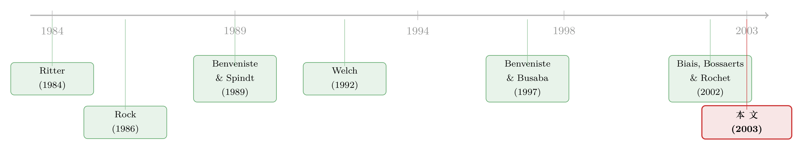

新股「打折」的秘密，藏在定价和上市之间那几天里
本文读的是 Derrien & Womack (2003, Review of Financial Studies)：在 1992–1998 年法国的新股市场上，同时跑着拍卖、簿记、固定价三种发行机制。作者发现，拍卖 (auction) 机制下的新股折价更低、且折价的波动也更小；而真正的原因，不在于拍卖更会「套话」，而在于它能把临近上市那几天的市场冷热，更充分地揉进发行价里。
1 一个所有发行人都头疼的问题
先讲一个几乎人人都见过、却很少有人能解释清楚的现象。
新股上市第一天，往往会「跳」一下——开盘价高过发行价。这个跳幅，就是大名鼎鼎的新股折价 (IPO underpricing)，也就是发行人「留在桌上的钱 (money left on the table)」。Loughran, Ritter, and Rydqvist (1994) 早就指出，几乎全世界的新股市场都存在系统性折价；美国过去二十年的平均折价大约在 15% 上下。从发行人的角度看，这是一笔实打实的成本：本可以多融到的钱，白白送给了打新的投资者。
但折价这件事，最让人不安的不是它的「平均值」，而是它的「方差」。
在「热」市场 (hot market) 里，三位数的折价并不稀奇；而在「冷」市场 (cold market) 里，折价又会突然蔫下去，甚至卖不出去。Ibbotson, Sindelar, and Ritter (1994) 记录过这种新股市场的周期性 (cyclicality)：市场的「温度」不仅决定了有多少家公司能成功上市，还决定了它们要被折价多少。于是从业者会念叨另一句行话——好的承销，不光是把平均折价压在 10%–20% 这个「合理」区间，还得让横截面上的折价方差尽量小。因为如果市场公认折价 15% 是常态，那个一不小心被折价 60% 的发行人，回头一算「少融了多少」，是要拍桌子的。
那么，一个自然的问题是：到底哪一种发行机制，最擅长在市场忽冷忽热的时候，把折价的水平和波动都控制住？
2 为什么偏偏要去法国
这个问题在美国几乎无法回答。原因很简单：美国新股市场几十年来只用一种机制——承销商主导的簿记 (bookbuilding)。没有对照组，就谈不上比较。
法国恰恰提供了一个难得的「天然实验室」。在 1992–1998 这段时间里，法国市场上同时活跃着三种差异巨大的发行机制：
- OPF（Offre à prix ferme，固定价格发行）：发行人和承销商先谈定一个固定价，投资者照价认购，由市场管理机构 SBF 按比例配售。定价一般在上市前约
8.27个日历日。 - OPM（Offre à Prix Minimal，拍卖机制）：承销商先设一个最低价，投资者像密封拍卖一样递交「价格/数量」标单，SBF 汇总出一条需求曲线，再由发行方与承销商商定发行价和一个上限价（高出上限的「不切实际」报价被剔除）。定价到上市平均只隔
1.99天。 - PG（Placement Garanti，簿记）：与美式簿记几乎一样——先定价格区间，承销商带着公司路演 (road show)，机构投资者递交非约束性的认购意向，最后承销商定价、并自由裁量地配售。定价到上市平均隔
5.53天。
三者最本质的区别，在于「谁说了算」：OPF 和 OPM 是投资者驱动 (investor-driven) 的，定价更多由投资者的报价决定；而 PG 把核心权力交给了承销商，由他来定价、并把股票配给他认为「合适」的人。
样本一共 264 家公司，全部来自规模较小的「Second Marché」(SM) 与 1996 年才仿照 NASDAQ 设立的「Nouveau Marché」(NM)。其中 OPM 有 99 家、PG 有 135 家、OPF 只剩 24 家——固定价机制在 1996 年后基本退出了历史舞台。所以全文真正的擂台，是拍卖 (OPM) vs. 簿记 (PG) 这一对。
顺带一提一个有意思的制度细节：承销商说，外国机构投资者不愿意参与 OPM 拍卖——一来不熟悉这套规则，二来拍卖不给他们任何「配售优待」。所以想吸引外资的大公司，往往主动选 PG。这条线索后面会变得重要。
3 第一步：先证明「市场温度」真的会传染给折价
在比较机制之前，作者先要把一件事坐实：新股折价，确实随近期市场行情而动。
为此，他们构造了两个核心的市场状态变量，全部基于 SBF 的 MIDCAC 指数，而且只用定价日之前能观察到的信息（这一点很关键，避免把上市之后的行情或承销商托价混进来）：
- 市场收益率 (Market Return)：定价日前三个月 MIDCAC 的买入持有收益，按「越近权重越大」加权平均。用论文的写法，记最近一个月、上一个月、再上一个月的收益分别为 \(R_{-1}, R_{-2}, R_{-3}\)，则
$$ \text{Market Return} = \frac{3\,R_{-1} + 2\,R_{-2} + 1\,R_{-3}}{6} $$
权重 3、2、1，除以 6，得到的仍是一个「加权后的月度收益」。背后的假设是：投资者会回望过去三个月，但对最近的行情看得更重。
- 市场波动率 (Market Volatility)：定价日前一个月，MIDCAC 日收益的标准差。
数据先给了一记响亮的耳光。整个样本里，新股定价之前的平均市场收益率高达 1.55%，而 1992–1998 整段时间的平均月度收益只有 0.58%；与之对照，定价前的市场波动率（0.62%）和全期平均（0.55%）则相差无几。
这两个数字一摆，就说清了一件事：公司确实偏爱在「热」市场里上市（择时择的是收益，不是波动）。Ritter (1984) 早就描述过的「热发行市场」，在法国数据里再次现身。
接着，作者用回归把这层关系钉死。被解释变量有两个：一是首日折价本身，二是首日折价的「平方偏离 (squared deviation)」——即第一个回归残差的平方，用来刻画折价的方差。控制变量包括交易所虚拟变量、高科技虚拟变量、市值对数等。结论是：近期市场收益率对折价的影响在所有时间窗口（三个月、一个月、一周）下都高度显著。市场越热，新股折价越高、也越不稳。
4 但真正关键的一步：不是「会不会」，而是「谁更会」
到这里，悬念才真正展开。
如果折价随市场温度波动是一条普遍规律，那三种机制是不是都一样地被市场牵着走？还是说，某一种机制能更好地把这股「热气」消化进发行价，从而让折价更可控？
先看描述性的数字（来自样本统计表）。首日折价的均值与标准差是这样的：
| 机制 | 首日折价均值 | 首日折价标准差 |
|---|---|---|
| OPM（拍卖） | 9.68% |
12.25% |
| PG（簿记） | 16.89% |
24.49% |
| OPF（固定价） | 8.88% |
10.98% |
| 全样本 | 13.23% |
19.69% |
拍卖 (OPM) 的折价均值（9.68%）几乎只有簿记 (PG)（16.89%）的一半多一点；更扎眼的是标准差——拍卖是 12.25%，簿记高达 24.49%，整整差出一倍。也就是说，无论看水平还是看波动，拍卖都赢了。
这就来到了全文我想反复讲透的那「一个核心」：拍卖为什么赢？
直觉上你可能会说，拍卖能更好地从投资者那里「套出」估值，所以定价更准。但作者给出的解释要更朴素、也更有说服力——
赢就赢在「时间」上。 拍卖之所以能更充分地把近期市场行情纳入发行价，最重要的原因之一，是它的定价日离上市日更近：OPM 平均只隔 1.99 天，PG 隔 5.53 天，OPF 更是隔 8.27 天。
把这条线索和第 3 节连起来，故事就闭环了：既然折价的来源，是「定价之后、上市之前」市场又涨了一截、而发行价没跟上，那么这段时间间隔越长，没被价格吸收的市场涨幅就越多，折价自然越大、越不稳。簿记把定价提前了好几天，等于把自己暴露在更长一段「行情风险敞口」里；而拍卖几乎贴着上市日定价，把这段敞口压到了最短。
于是反转出现：人们一向觉得簿记更「先进」、更能定价（Benveniste and Spindt (1989) 的经典论证就是如此），但在控制折价波动这件事上，恰恰是看起来更「原始」的拍卖，因为定价更贴近交易、更吃得进最新的市场信息，反而稳稳胜出。
作者进一步指出，OPM 拍卖里那条由投资者标单汇出的需求曲线，本身就编码了投资者对「当下」市场的判断；而簿记下承销商的自由裁量，反而可能让价格对近期行情反应不足 (underreact)。这正好为 Biais, Bossaerts, and Rochet (2002) 那个「拍卖是最优 IPO 机制」的理论结论，提供了一份难得的实证支持。
必须说清楚的一点：拍卖折价更低，不等于拍卖让发行人「赚翻了」。它真正的好处是可预测、可控——折价水平更接近那个「合理」区间，方差更小，发行人不至于在某个大热天里被白白多折价几十个百分点。这与从业者口中「好定价 = 低横截面方差」的直觉完全吻合。
5 文献脉络
把这篇论文放进新股研究的长河里看，会更清楚它站在哪。
最早，新股折价被当成一个需要解释的「异象」：Ibbotson (1975) 记录了它的存在，Rock (1986) 用赢者诅咒 (winner's curse) 给出了第一个有影响力的理性解释——知情者只在「好」新股上跟你抢，发行人只能靠折价补偿不知情的散户。
接着，文献分出两条支流。一条研究机制：Benveniste and Spindt (1989) 论证美式簿记之所以高效，是因为它能诱使机构投资者说真话，代价就是一点折价；Welch (1992) 则盯住固定价机制，说明它会触发信息瀑布 (informational cascade)，逼着发行人折价去「制造」正向的跟风；Benveniste and Busaba (1997) 把簿记与固定价摆上理论天平做了正面比较。另一条研究周期：Ritter (1984) 描述了「热发行市场」，指出公司选择什么时候上市，会让折价天差地别。

这两条支流，恰恰在本文这里汇合了：作者把「机制」和「市场周期」放进同一个框架，问的是「在冷热交替的市场里，哪种机制最能控制折价」。而紧随其后的 Biais, Bossaerts, and Rochet (2002) 从理论上断言拍卖最优，本文则用法国数据为它背了书。
有意思的是，这条脉络后来还有一个看似矛盾的续集。在本博客里，《「贵」的方法，为什么把「便宜」的方法赶尽杀绝？——日本新股发行的一场自然实验》 讲的正是：既然拍卖这么好，为什么全世界（包括日本、法国后来）都倒向了簿记、把拍卖挤出市场？而 《为什么「贵」的承销方式反而赢了？——新股发行里的一笔「分析师彩虹屁」暗账》 给了另一种答案——簿记能换来分析师的「彩虹屁」。把这三篇连起来读，你会看到同一个问题的正、反、合。
6 评论与延伸（Q&A + 研究方向）
(a) 几个可能的疑问
Q：拍卖折价低，会不会只是因为选拍卖的公司「天生」就不一样（自选择问题）？
这是本文最大的软肋。机制不是随机分配的：所有 Nouveau Marché 的小公司都用 PG，而想吸引外资的大公司也偏好 PG（因为外资不爱参与 OPM）。所以「拍卖 vs 簿记」的差异里，混着公司规模、交易所、是否高科技、是否要引外资等系统性差别。作者用市值对数、交易所与高科技虚拟变量去控制，但这是「观测性控制」，不是外生变异，无法完全排除「是公司选了机制，而不是机制造成了结果」。
Q：既然定价—上市的时间差是关键，那拍卖的优势是不是只是「定价定得晚」这一条，与拍卖本身无关？
在某种意义上，作者想说的恰恰就是这一点——拍卖的核心优势，正是它在制度上允许把定价贴近上市、从而吃进最新市场信息。这不是 bug 而是 feature。但这也意味着：理论上，如果让簿记也把定价推迟到上市前一天，它的折价波动或许就能向拍卖靠拢。时间差究竟是机制的「内生特征」还是可以单独调节的「旋钮」，本文没有彻底拆开。
Q：折价低，对发行人到底是不是好事？拍卖会不会以「融资额波动更大」为代价？
折价低意味着「留在桌上的钱」少，这对发行人是好的；折价方差小，意味着结果更可预测，也是好的。但 Benveniste and Busaba (1997) 提醒过，机制的选择还牵涉到「期望融资额」与「融资额方差」的权衡。本文聚焦折价，没有正面回答「拍卖是否让发行人最终拿到的钱更多」，这是它刻意收窄的边界。
Q：这是法国 1992–1998 的小盘股样本，结论能外推吗？
要谨慎。样本全在 Second Marché 和 Nouveau Marché 两个小市场，OPF 只有 24 家、统计意义有限。MIDCAC 指数、SBF 的配售规则、法国特有的「上限价剔除不实报价」等，都带着强烈的本地制度色彩。结论的「方向」（拍卖更能纳入近期信息）有较强的理论支撑，但具体量级未必能搬到美国大盘股或今天的市场。
Q：为什么外资偏好簿记这件事值得单独拎出来？
因为它既是「拍卖被慢慢淘汰」的现实推手，也是本文自选择问题的根源之一。外资不愿参与拍卖（不熟规则、拿不到配售优待），于是大公司为引外资而选簿记——这恰恰把「机制」与「公司类型」绑在了一起，让纯粹的机制效应更难识别。
Q：折价的「方差」为什么和「均值」一样重要，甚至更重要？
因为市场默认存在一个折价常态（比如 15%）。一个发行人能否事先知道自己大概会被折价多少，直接决定了他能否做出理性的发行决策。均值衡量「平均成本」，方差衡量「这笔成本有多不可控」——对单个发行人而言，撞上 60% 折价的尾部风险，比平均高两个点更让人难以接受。
(b) 几个可能的研究问题与提案
1）把「定价—上市时间差」当成处理变量，做一次更干净的识别。
【经济故事】本文的核心机制是时间差，但时间差与机制本身缠在一起。若能找到同一机制下、因外生原因（如监管流程、节假日、结算系统改造）导致时间差变化的样本，就能把「时间差效应」从「机制效应」里剥出来。 【可行性】中。需要细颗粒度的发行时间表数据和一个可信的外生冲击；欧洲多国的发行制度差异或许能提供，但找到干净的外生变异是难点。
2）把这套逻辑搬到公司债的一级市场。
【经济故事】公司债发行同样有「定价—上市时间差」和簿记式配售，且近年中国等市场出现过「簿记 vs 荷兰式招标」的并存。债券折价（首日二级市场回报）是否也随近期信用利差行情波动、并因机制不同而异？这与本博客 《新债上市第一笔成交，凭什么白赚 47 个基点？》 的主题直接相关。 【可行性】中高。TRACE、中国银行间市场的发行与首日成交数据可得；机制变异在跨市场或跨时段上存在，识别相对扎实。
3）外资持有人偏好如何反向塑造发行机制的存亡。
【经济故事】本文一句「外资不爱拍卖」埋下了拍卖式微的伏笔。若把发行机制选择，建模为「发行人想引外资 → 选簿记 → 拍卖份额萎缩」的均衡，就能解释为何理论最优的拍卖会被市场淘汰。 【可行性】中。需要发行层面的投资者构成数据（谁认购、谁配到），这类数据在多数市场不公开，识别外资偏好的因果作用较难，属于「故事漂亮但数据难」的一类。
4）用机器对承销商的「自由裁量配售」做拆解。
【经济故事】簿记折价更高、更不稳，作者归因于承销商的自由裁量可能让价格对近期行情反应不足。若能拿到配售明细，就能直接检验：簿记下的定价偏差，究竟来自「信息」还是「关系/裁量」。 【可行性】低到中。配售层面的微观数据极难获取（通常是承销商内部数据），但一旦拿到，识别力很强。
7 我的判断
这篇文章的贡献，是把一个在美国「无从比较」的问题，搬到一个三机制并存的真实市场里做了横向对照，并且没有停在「拍卖折价更低」这个表层事实上，而是顺藤摸瓜找到了一个朴素却有力的机制——定价与上市之间的时间差，决定了多少近期市场信息能被价格吸收。这个解释优雅，且与「热市场折价更高」的周期性文献严丝合缝，也为 Biais, Bossaerts, and Rochet (2002) 的理论提供了实证落点。
我对识别的主要担忧，集中在自选择：机制是公司挑的，而挑的依据（规模、交易所、是否要引外资）又系统性地与折价相关。作者用了观测性控制，但这离「外生变异」还有距离——读这篇文章时，最好把「拍卖导致更低折价」读成「拍卖型发行伴随更低折价，且有一个可信的机制故事支撑因果方向」，而不是一个干净的因果系数。OPF 仅 24 家、样本局限于两个小盘市场，也提醒我们对量级保持克制。
我接下来最想看到的，是有人能把「时间差」这个旋钮单独拧动来做识别——哪怕只是在同一机制内部，利用某种外生原因造成的定价—上市间隔变化，去验证「间隔越长、折价越高越不稳」这条因果链。如果这一步能走通，本文那个朴素的洞见，就能从「一个漂亮的相关性故事」升级为「一条经得起推敲的因果机制」。
参考文献
- Benveniste, L., and W. Y. Busaba (1997). Bookbuilding vs. Fixed Price: An Analysis of Competing Strategies for Marketing IPOs. Journal of Financial and Quantitative Analysis 32, 383–403.
- Benveniste, L., and P. Spindt (1989). How Investment Bankers Determine the Offer Price and Allocation of New Issues. Journal of Financial Economics 24, 343–361.
- Biais, B., P. Bossaerts, and J. C. Rochet (2002). An Optimal IPO Mechanism. Review of Economic Studies 69(1), 999–1017.
- Derrien, F., and K. L. Womack (2003). Auctions vs. Bookbuilding and the Control of Underpricing in Hot IPO Markets. Review of Financial Studies 16(1), 31–61.
- Ibbotson, R. (1975). Price Performance of Common Stock New Issues. Journal of Financial Economics 2, 235–272.
- Ibbotson, R., J. Sindelar, and J. Ritter (1994). The Market's Problems with the Pricing of Initial Public Offerings. Journal of Applied Corporate Finance 7, 66–74.
- Loughran, T., J. R. Ritter, and K. Rydqvist (1994). Initial Public Offerings: International Insights. Pacific-Basin Finance Journal 2, 165–199.
- Ritter, J. (1984). The Hot Issue Market of 1980. Journal of Business 57, 215–240.
- Rock, K. (1986). Why New Issues are Underpriced. Journal of Financial Economics 15, 187–212.
- Welch, I. (1992). Sequential Sales, Learning, and Cascades. Journal of Finance 47, 695–732.